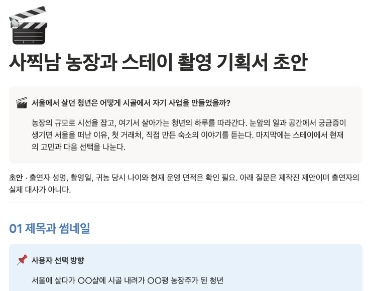

미팅으로 소재 정리
대표의 경험과 고객의 질문을 바탕으로 전달할 메시지를 잡습니다.
기업용 AI · 업무자동화 교육 및 시스템 도입
줌 미팅으로 꺼낸 이야기를 기획서와 촬영 질문지로.
대표와 직원이 함께 배우고, 직접 운영하는 직업채널을 만듭니다.
경험 · 고객의 질문 · 사업의 강점
내가 해본 일이 어떻게
남이 돈을 내는 상품이 됐을까?
실제 제작 기획서의 중심 질문 발췌

채널 개설 다음이 진짜 시작입니다.
영상 하나를 만드는 방법과 함께,
다음 영상을 더 잘 결정하는 운영 구조를 전달합니다.
THE OPERATING SYSTEM
대표의 경험과 고객의 질문을 바탕으로 전달할 메시지를 잡습니다.
중심 질문, 첫 장면, 현장에서 보여줄 자료와 질문을 정리합니다.
제목·썸네일·첫 30초가 같은 이야기를 약속하는지 점검합니다.
공개 후 반응과 이탈 지점을 살펴 다음 제작의 개선점을 결정합니다.
레퍼런스 URL을 넣고 제목과 썸네일을 비교합니다. 좋은 사례가 우리 기획의 어떤 판단에 쓰이는지 정리합니다.
시청자가 얻는 것, 제목의 약속, 증거가 되는 장면을 제작 전에 확인합니다. 대표의 설명을 직원이 실행할 수 있는 기준으로 바꿉니다.
화면은 실제 체크시트입니다. 기업 적용 범위는 사전 진단 후 정합니다.FROM A REAL PLANNING DOCUMENT
경험 속에서 이야기를 찾습니다.
설명을 실제 자료와 장면으로 보여줍니다.
기존 인터뷰 기획서 일부를 재구성한 예시입니다.
도입 시에는 기업의 업종과 고객에 맞는 기획으로 적용합니다.
ACTUAL OUTPUTS / 실제 제작 결과물
현재 운영 중인 자료와 실제 출력물을 확인하세요.
사옥 도착 → 핵심 질문 → 본편 장면 연결
“사람이 왜 이렇게 없어요?”
“사람 못 믿는데 왜 사람 모으는 사업을 해요?”
“광고비 어디까지 태워요?”
실제 ‘구피디 편 — 촬영용’ 원문의 질문과 구성을 발췌해 표시했습니다.
컷편집 → 자막 · 효과 → 사람의 검수
구피디편의 실제 편집 XML, Premiere 프로젝트, 교정 자막 파일이 남아 있습니다. 작업 비율 약 80%는 운영자 설명 기준입니다.
기획·편집·자막·효과 작업을 거쳐 공개한 실제 완성본입니다. 약 80% 자동화 제작은 운영자 설명 기준입니다.
구피디편 완성본 보기 ↗구피디편은 Premiere Pro 기반으로 AI가 편집·자막·효과 제작에 참여한 사례입니다. 기업에는 이 작업 방식과 시스템을 적용하며, 프로젝트별 자동화 범위·Adobe 이용 환경·검수 절차는 도입 시 확정합니다.
출연자의 경험과 업무를 듣고, 촬영에서 확인할 질문과 장면으로 정리합니다.
2026.09.17 실제 미팅 · 발언자별로 저장된 같은 녹화의 서로 다른 시점입니다.
CASE STUDY / 구피디편 제작 사례
운영자 설명 기준의 약 80%입니다. 촬영·검수·최종 판단은 사람의 역할과 구분합니다.
기업 적용 제안 흐름입니다. 자동 접수·저장·알림의 연동 범위는 실제 환경을 확인해 확정합니다.
진행 상태, 작업 인계, 편집 프로젝트와 출력물을 구분합니다. 원본을 보존하고 다음 담당자가 이어받을 수 있도록 정리합니다.
프로젝트별 업무 요청, 결과물 확인, 피드백과 다음 작업을 하나의 운영 흐름으로 설계합니다. 실제 슬랙 화면은 공개 가능한 채널과 메시지 범위를 확인한 후 추가합니다.
FOR YOUR GUEST / 출연자 전달 자료
촬영의 방향과 동선, 예상 질문을 출연자에게 전달합니다.
제작진은 모바일 진행표로 준비와 촬영을 확인합니다.
실제 ‘농장과 스테이 촬영 기획서 초안’입니다. 확정 전 정보는 초안에 표시돼 있습니다.
IN YOUR HAND / 현장에서 바로 사용
휴대폰 한 화면에서 장소별 질문과 필수 장면을 확인하고,
촬영한 항목을 바로 체크하는 모바일 진행표를 제공합니다.
이번 ‘농장과 스테이’ 기획서 초안으로 만든 실제 작동 예시입니다.
AI 시스템 설정부터 실제 촬영, 편집 자동화까지 한 달 동안 함께 진행합니다.
대표의 경험과 회사의 업무를 정리하고, AI 시스템 사용법과 자료·폴더 관리 흐름을 익힙니다.
남는 결과물회사에 맞춘 AI 작업 환경과 대표·직원 역할 정리
미팅 내용을 바탕으로 콘텐츠 방향, 제목·썸네일·첫 30초와 현장 질문을 잡습니다. 시청자의 다음 행동까지 연결합니다.
남는 결과물실제 촬영 기획안·질문지·휴대폰용 촬영 진행표
현장에서 질문과 촬영 동선을 적용하고, 편집에 필요한 답변·자료·장면을 확보하는 방법을 익힙니다.
남는 결과물편집에 활용할 촬영 자료와 현장 개선 체크
첫 실습에서 부족했던 답변과 장면을 확인하고, 질문·촬영 동선을 보완해 다시 적용합니다. 편집에 필요한 추가 자료를 확보합니다.
남는 결과물보완 촬영 자료와 회사의 현장 운영 기준
확보한 자료로 컷편집·자막·효과 작업 흐름을 설정합니다. AI 처리와 사람의 검수 기준을 나눠, 다음 영상에도 사용할 편집 라인을 잡습니다.
남는 결과물회사 업무에 맞춘 편집 자동화 흐름과 검수·인계 기준
회차별 날짜·진행 시간·현장 장소는 사전 협의합니다. 현장 실습과 편집 라인 구축을 포함하며, 지속적인 촬영·편집 대행은 별도 협의합니다.
WHAT YOUR TEAM TAKES AWAY
대상 고객, 콘텐츠 방향, 영상에서 다음 행동으로 이어지는 동선을 함께 정리합니다.
기획서와 촬영 질문지를 만드는 기존 시스템을 회사 업무에 맞게 적용하고 사용법을 교육합니다.
대표는 경험과 판단을 제공하고, 직원은 자료 정리와 시스템 활용을 맡도록 반복 업무를 정리합니다.
조회수뿐 아니라 클릭, 시청 유지, 문의 등 확인 가능한 지표로 다음 개선점을 결정하도록 교육합니다.
1개월 기본형 총 4회 / 확장형 총 5회 대표·직원 대상 AI 업무자동화 교육, 현장 실습 및 Premiere Pro 편집 자동화 라인 구축, 미팅 기반 기획서·촬영 질문지 시스템 적용, 직업채널 운영 방식과 성과 개선 기준 교육, 휴대폰용 촬영 진행표 제공.
회차별 일정·진행 시간·현장 장소, 적용할 시스템 목록, 회사별 연동과 사용 환경, 이용 기간, 유지보수 및 지원 범위는 업무 진단 후 서면으로 확정합니다.
촬영·편집 대행, 지속적인 채널 운영, 유료 AI 서비스 및 외부 도구 이용료는 포함 여부를 별도로 협의합니다. 특정 조회수나 매출을 보장하는 상품은 아닙니다.